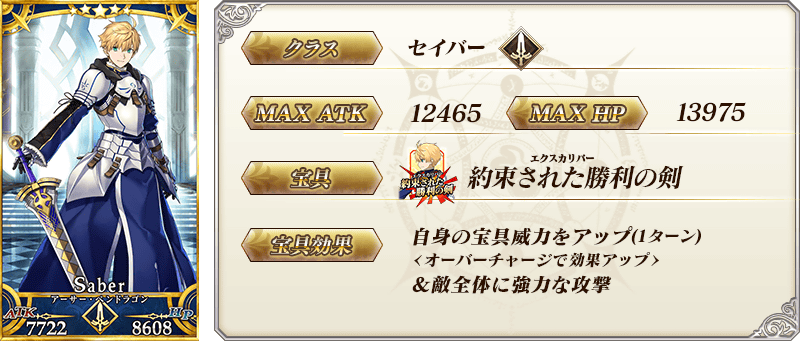
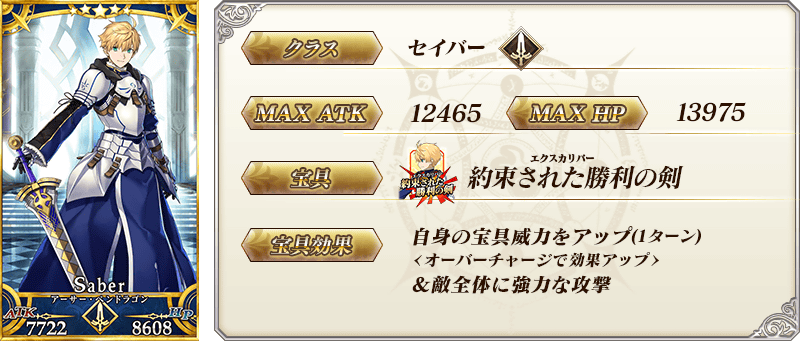
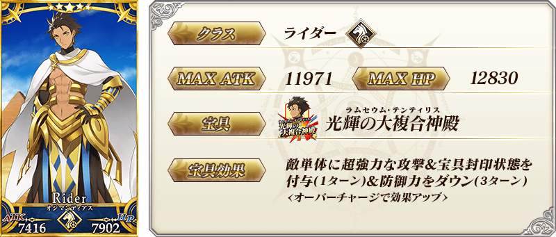
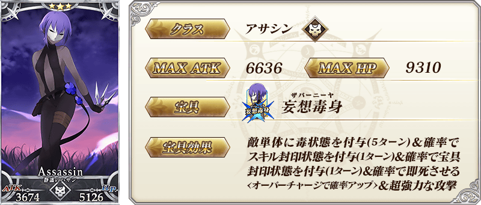
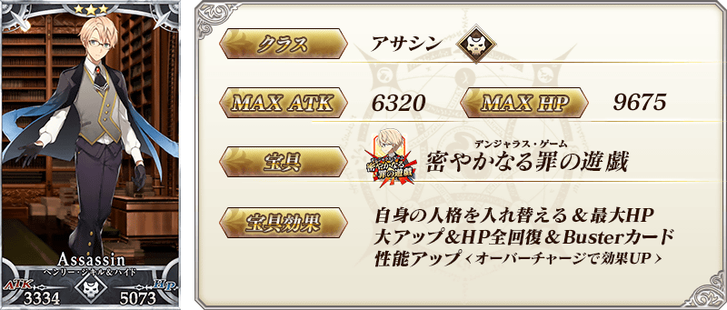
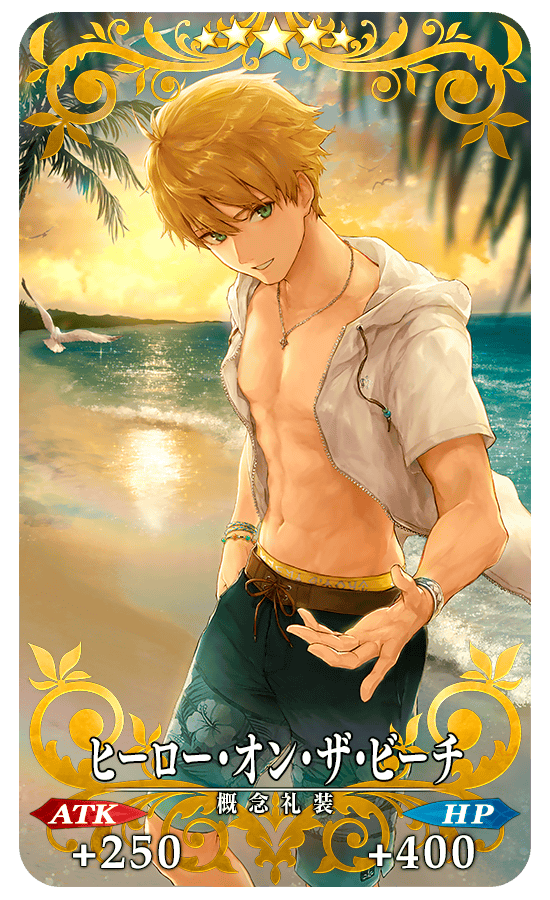
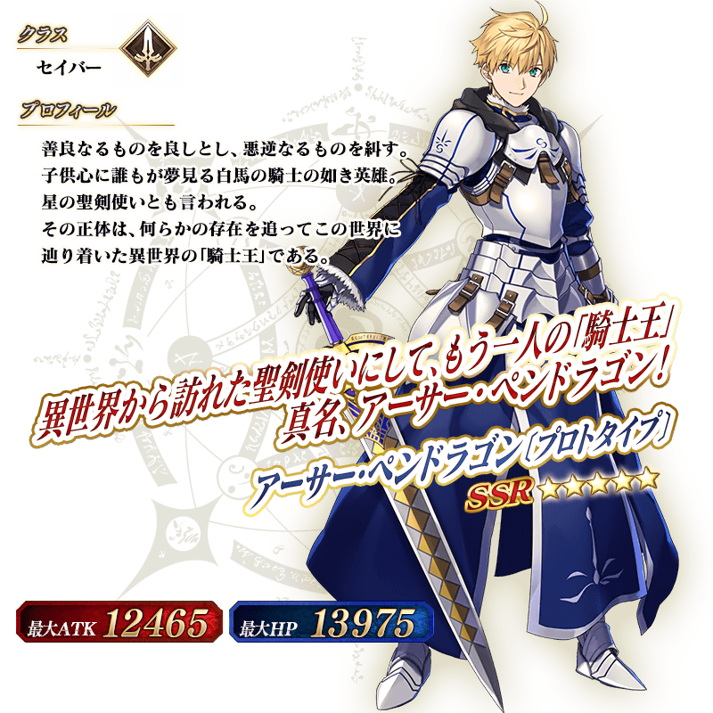
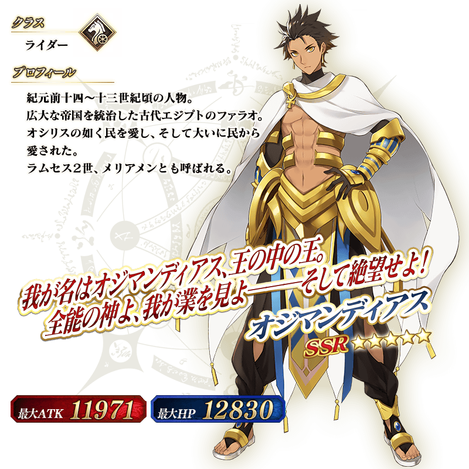

◆『「Fate/Prototype 蒼銀的碎片」廣播劇CD完結記念Pick Up召喚(每日交替)』期間◆
期間:2019年11月20日(三) 17:00～12月4日(三) 11:59
舉辦期間限定『「Fate/Prototype 蒼銀的碎片」廣播劇CD完結記念Pick Up召喚(每日交替)』！
從廣播劇CD「Fate/Prototype 蒼銀的碎片」關聯的從者之中「★5(SSR)亞瑟・潘德拉剛〔Prototype〕」以期間限定登場！
本次包含上述Pick Up 5位的從者！
「★5(SSR)亞瑟・潘德拉剛〔Prototype〕」「★5(SSR)奧茲曼迪亞斯」以每日交替Pick Up、「★3(R)馮・霍恩海姆・帕拉塞爾斯」「★3(R)靜謐的哈桑」「★3(R)亨利・傑基爾＆海德」常駐Pick Up！
並且，廣播劇CD「Fate/Prototype 蒼銀的碎片」關聯從者做為主題的期間限定概念禮裝「★5(SSR)ヒーロー・オン・ザ・ビーチ」「★4(SR)カフェ・キャメロット」「★3(R)虚影の塵風かき氷」Pick Up！
Pick Up期間中，Pick Up對象從者與概念禮裝的出現機率提升！
詳情請在聖晶石召喚畫面左下的召喚詳細確認。
11次召喚中確定1張★4(SR)以上和確定1位★3(R)以上的從者！ ※確定★4(SR)以上包含從者和概念禮裝。
◆有關從者的注意◆
※請注意『「Fate/Prototype 蒼銀的碎片」廣播劇CD完結記念Pick Up召喚(每日交替)』做為每日交替，「★5(SSR)亞瑟・潘德拉剛〔Prototype〕」就算Pick Up期間中也會有不被抽出的日子。
※「★5(SSR)亞瑟・潘德拉剛〔Prototype〕」在Pick Up期間結束後不會追加到故事召喚。
※「★5(SSR)奧茲曼迪亞斯」「★3(R)馮・霍恩海姆・帕拉塞爾斯」「★3(R)靜謐的哈桑」「★3(R)亨利・傑基爾＆海德」在Pick Up期間結束後仍會在故事召喚被抽出。
◆有關概念禮裝的注意◆
※「★3(R)虚影の塵風かき氷」在Pick Up期間中，也能靠友情點數召喚獲得。
※請注意自友情點數召喚抽出的「★3(R)虚影の塵風かき氷」在自動變還設定登錄★3(R)概念禮裝的情況，會變成自動變還的對象。
◆『「Fate/Prototype 蒼銀的碎片」廣播劇CD完結記念Pick Up召喚(每日交替)』Pick Up內容◆
| Pick Up期間 | Pick Up內容 | |
|---|---|---|
| 每日交替Pick Up | 全天Pick Up | |
| 11/20(三) 17:00～ 11/22(五) 22:59 |
★5 亞瑟・潘德拉剛 〔Prototype〕 ★5 奧茲曼迪亞斯 |
★3 馮・霍恩海姆・帕拉塞爾斯 ★3 靜謐的哈桑 ★3 亨利・傑基爾＆海德 |
| 11/22(五) 23:00～ 11/24(日) 22:59 | ★5 亞瑟・潘德拉剛 〔Prototype〕 |
★3 馮・霍恩海姆・帕拉塞爾斯 ★3 靜謐的哈桑 ★3 亨利・傑基爾＆海德 |
| 11/24(日) 23:00～ 11/26(二) 22:59 |
★5 奧茲曼迪亞斯 | ★3 馮・霍恩海姆・帕拉塞爾斯 ★3 靜謐的哈桑 ★3 亨利・傑基爾＆海德 |
| 11/26(二) 23:00～ 11/28(四) 22:59 |
★5 亞瑟・潘德拉剛 〔Prototype〕 ★5 奧茲曼迪亞斯 |
★3 馮・霍恩海姆・帕拉塞爾斯 ★3 靜謐的哈桑 ★3 亨利・傑基爾＆海德 |
| 11/28(四) 23:00～ 11/30(六) 22:59 |
★5 亞瑟・潘德拉剛 〔Prototype〕 |
★3 馮・霍恩海姆・帕拉塞爾斯 ★3 靜謐的哈桑 ★3 亨利・傑基爾＆海德 |
|
11/30(六) 23:00～ 12/2(一) 22:59 |
★5 奧茲曼迪亞斯 | ★3 馮・霍恩海姆・帕拉塞爾斯 ★3 靜謐的哈桑 ★3 亨利・傑基爾＆海德 |
| 12/2(一) 23:00～ 12/4(三) 11:59 |
★5 亞瑟・潘德拉剛 〔Prototype〕 ★5 奧茲曼迪亞斯 |
★3 馮・霍恩海姆・帕拉塞爾斯 ★3 靜謐的哈桑 ★3 亨利・傑基爾＆海德 |
※請注意會以每日交替變更Pick Up的從者。
 
※上述「★5(SSR)亞瑟・潘德拉剛〔Prototype〕」的卡面為靈基再臨第2階段。

※上述「★5(SSR)亞瑟・潘德拉剛〔Prototype〕」的卡面為靈基再臨第2階段。
 ※上述「★5(SSR)奧茲曼迪亞斯」的卡面為靈基再臨第2階段。
 ※上述「★3(R)馮・霍恩海姆・帕拉塞爾斯」的卡面為靈基再臨第2階段。
※上述「★3(R)馮・霍恩海姆・帕拉塞爾斯」的卡面為靈基再臨第2階段。
 ※上述「★3(R)靜謐的哈桑」的卡面為靈基再臨第2階段。
 ※上述「★3(R)亨利・傑基爾＆海德」的卡面為靈基再臨第2階段。

|  |
★★★★★SSR |

|
★★★★SR |

|
★★★R |
 ※上述「★5(SSR)亞瑟・潘德拉剛〔Prototype〕」的立繪為靈基再臨第2階段。
 ※上述「★5(SSR)奧茲曼迪亞斯」的立繪為靈基再臨第2階段。
在2018年舉辦的「迦勒底男孩收藏2018」登場的「★5(SSR)亞瑟・潘德拉剛〔Prototype〕」靈衣開放權在達文西工房的「稀有稜鏡交換」追加！
可用稀有稜鏡5個交換上述靈衣開放權。
另外，想要靈衣開放的話，除了靈衣開放權外必須再加上一些開放條件。
◆追加時間◆
2019年11月20日(三) 17:00～
※在「稀有稜鏡交換」追加的靈衣「純白薔薇」開放權為常駐，沒有交換期限。 ※關於已經獲得交換對象靈衣開放權的玩家，無法交換。
◆有關靈衣開放權的注意◆
※請注意未持有「★5(SSR)亞瑟・潘德拉剛〔Prototype〕」的情況，可入手靈衣開放權。但無法進行靈衣開放。

※「靈衣開放」後會自動切換戰鬥角色和圖示。若想回到「靈衣開放」前的狀態和變成其他再臨階段的情況，可自從者詳細畫面變更。 ※透過「靈衣開放」只變更從者的外觀和語音，職階和數值沒有變化。 ※請注意一部份的語音沒有變化。

「靈衣開放」是自強化畫面進行。
介紹開放靈衣「純白薔薇」的「★5(SSR)亞瑟・潘德拉剛〔Prototype〕」寶具演出いたします！
在「Fate/Grand Order」官方網站內的公告中，以影片公開寶具演出，敬請確認。
介紹「★5(SSR)亞瑟・潘德拉剛〔Prototype〕」「★5(SSR)奧茲曼迪亞斯」的寶具演出！
在「Fate/Grand Order」官方網站內的公告中，以影片公開寶具演出，敬請確認。
其他還有，『「Fate/Prototype 蒼銀的碎片」廣播劇CD完結記念宣傳活動』同時舉辦！
關於詳情，請自下述橫幅確認。
■「Fate/Prototype 蒼銀的碎片」廣播劇CD完結記念宣傳活動詳細情報